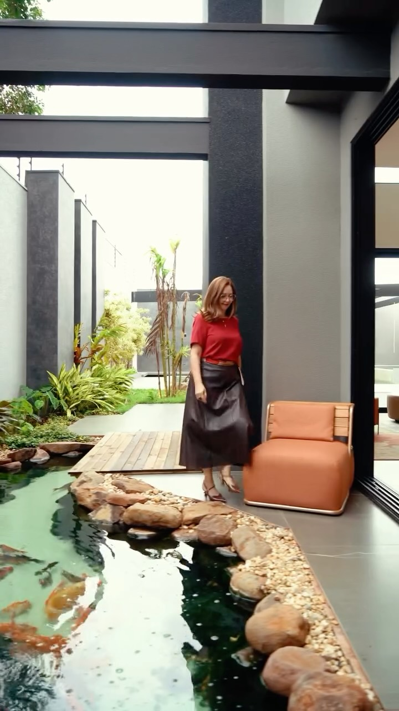
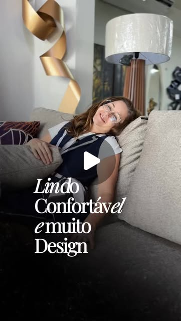
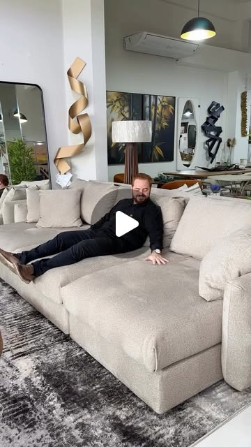
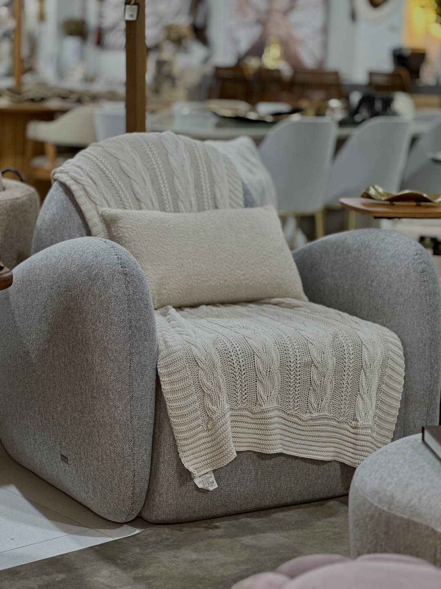

Imperador Home DesignEstratégia de posicionamento da marca
Cliente
Imperador Home Design
Cidade
Cianorte, Paraná
Data
22 maio 2026
Status
Para aprovação
00
Como navegar esta apresentação
Sete capítulos, noventa minutos, uma tese fechada.
01
O percurso até aqui
05
Companhia: a Imperador Home Design hoje
02
Os 3 Cs em síntese
06
A marca fundamental
03
Consumidor: quem é o cliente
07
A tagline
04
Competidor: onde a Imperador Home Design joga
Fim
Próximos passos
01
Capítulo Um
Percurso
O percurso até aqui.
Cada decisão a seguir está ancorada em um dos quatro marcos do projeto. Nenhuma é palpite.
01
Onde estamos no processo
O roadmap do projeto.
Mar / 2026
Diagnóstico inicial
Mapeamento de ativos atuais e conflito de territórios visuais
Abr a Mai
Pesquisa 3Cs
Cinco IAs cruzadas com análise visual direta dos perfis
12 Mai
Entrevista da fundadora
90 minutos com a Andreia, transcrita e consolidada
Estamos aqui
22 Mai
Esta apresentação
Validação da tese e escolha da tagline
Até 27 Mai
Aprovação formal
3 dias úteis para confirmação por escrito da Andreia
10 Jun
Entrega da Fase 2
Brand Book completo, 10 dias úteis após aprovação
01
Tudo o que está por trás desta apresentação
O que fizemos até aqui.
Nada do que vem a seguir é palpite. Cada slide se sustenta em pelo menos uma dessas fontes.
Desk research
Mercado de Cianorte e microrregião mapeado em fontes públicas: IBGE (demografia, PIB per capita), Tribuna de Cianorte (economia local), Gazeta do Povo (mapa da moda no PR) e Urben (tendências de interiores 2026).
Referências de método
Livros e materiais de método consultados para calibrar arquétipos, tom de voz, tese de posicionamento e formato editorial da apresentação.
Perfis analisados
Pesquisa de campo direta no Instagram dos seis concorrentes regionais: bio, captions, highlights, paleta visual e vocabulário próprio extraídos verbatim em maio.
Entrevista da fundadora
Conversa estruturada com a Andreia em 12 de maio, transcrita e consolidada como capítulo próprio na pesquisa. Vocabulário-âncora da marca veio dali.
Briefing operacional
Cinco perguntas e duas orientações com o Rafael preencheram lacunas operacionais (marcas-âncora, ticket médio, perfil de equipe) que a entrevista da Andreia não cobria.
Capítulos de estratégia
Documento de estratégia consolidado, onze capítulos, da pesquisa à aprovação. Esta apresentação é a versão de leitura assistida desse mesmo conteúdo.
01
Antes de começarmos
Para que serve esta call.
Apresentamos a tese estratégica completa, ancorada no território Acolher. Saímos com a tese validada, a tagline escolhida, e a Fase 2 aprovada.
Entrega 1
Tese validada
Confirmação da tese estratégica completa, com Acolher como território recomendado.
Entrega 2
Tagline escolhida
Decisão entre as três candidatas. Frase pública que vai para vitrine, bio e campanha.
Entrega 3
Sinal verde para a Fase 2
Aprovação por escrito da Andreia, abrindo o trabalho do Brand Book.
01
Brand on a Page · o framework
A marca em uma página, sete linhas.
O documento que sintetiza a Fase 1 inteira. Cada linha responde uma pergunta sobre a marca. As respostas vêm no Capítulo 6.
Brand Book · Fase 1
A marca em uma página
Sete elementos · uma síntese
·1· Quem servimos
01
Público-alvo
Os grupos que a marca quer servir, com critério. Quem entra, quem volta, quem indica.
·2· Por que existimos
02
Propósito
A razão da marca existir, antes do lucro. O que ela resolve no mundo do cliente.
03
Promessa
O benefício central que a marca entrega sempre. A frase curta que o cliente leva embora.
·3· Como operamos
04
Valores
As prioridades inegociáveis quando há atrito. O que ganha quando duas direções entram em choque.
05
Trunfos
As vantagens que a marca tem e os outros não têm. O terreno onde ela joga ganhando.
·4· Como nos apresentamos
06
Personalidade
Os traços humanos que a marca incorpora. Como ela se comporta no mundo.
07
Tom de voz
Como a marca fala. O ritmo, o vocabulário, os silêncios.
01
O ponto de partida do projeto
O pedido que abriu a Fase 1.
"Reposicionar a Imperador Home Design de popular para premium, sem afastar o cliente que ela tem hoje. Ancorada no novo prédio que abre em outubro de 2026."
Síntese do briefing inicial da Andreia · formalizado no contrato da Fase 1
Prazo da Fase 1
Cinco dias úteis após o briefing. Duas rodadas de refação incluídas. A entrega final é a marca em uma página, do jeito que você acabou de ver.
01
O gatilho do projeto
A nova loja muda tudo. A marca precisa estar à altura.
Em outubro de 2026 a Imperador Home Design troca de endereço. Não é abertura de uma segunda unidade, é a mudança da loja inteira para um prédio novo, construído pela Andreia com recursos próprios. Toda a aplicação visual vai ser reconstruída. Esta é a janela para o reposicionamento.
Status da obra
Aterramento, levantamento e cobertura concluídos
Em fase de hidráulica e elétrica
Acabamento interno entra a seguir
Inauguração prevista: outubro de 2026
O que muda
Mudança da loja inteira, não filial adicional
Toda aplicação visual reconstruída do zero
Fachada, vitrine, sinalização, papelaria e ambiente interno
Margem para evoluir a identidade nesta janela
O que isso pede da Fase 1
Brand book pronto antes da mudança
Toda decisão estratégica vira insumo da aplicação
Estética só na Fase 2, após validação da tese
Janela de execução: junho a setembro de 2026
Status registrado na ata do kick-off de 6 de maio de 2026, com a Andreia.
01
A ambição declarada
"Pensou em mobiliar e decorar, o primeiro nome tem que ser Imperador Home Design."
Andreia · 12 de maio
Esse é o ponto B. O destino. Onde a marca quer estar em dois anos: primeira lembrança na microrregião quando alguém pensa em mobiliar.
Imperador Home Design · Cianorte
11 · 102
01
Onde estamos hoje e onde queremos chegar
Em Cianorte, gostada. A próxima fase é virar referência.
Estranhanão me conhece
Indiferenteconhece, não diferencia
GostadaCianorte · hoje
Amadaprimeira escolha
Referênciaprimeira escolha · com a nova loja
Modelo: Brand Love Curve · Graham Robertson · Beloved Brands · adaptado à microrregião de Cianorte.
Sinais de "gostada em Cianorte hoje"
14 anos de operação na Avenida Goiás
10,4 mil seguidores e conta verificada (cidade de 83 mil habitantes)
A própria Andreia se auto-avalia em 8/10 em padrão percebido
Boca a boca e arquitetos como motor declarado de vendas
Casos de fidelização contados na entrevista: Luciano, arquiteta de Maringá
Sinais de que ainda falta avançar
A Andreia declara a ambição. Ela ainda não é realidade.
Cliente ainda compara por preço com concorrentes
Vendas perdidas para Casa Bonita, Century e Realize
Transição estética em curso há 8 meses, ainda não consolidada
02
Três pilares em uma vista
Antes de aprofundar, os três Cs que sustentam tudo.
C · 01
Consumidor
Cliente de Cianorte e microrregião, renda concentrada (têxtil, agro, profissionais liberais). 800 a 2.000 famílias com poder de compra premium. Compra por gatilho de vida. Tem o atrito do luxo contido: quer alto padrão sem parecer exibido.
C · 02
Competidor
Em Cianorte, lidera entre as locais. A briga real está fora: Casa Bonita (Umuarama) com Sierra e Natuzzi, Century (Maringá) especificada por arquitetos, Realize Decor, Móveis Moderno. Arquiteto é o terreno-chave.
C · 03
Companhia
14 anos de mercado, 10,4 mil seguidores, conta verificada. Transição declarada há 8 meses. Novo prédio out/2026. Andreia rosto curatorial. Tensão central: "essa transição às vezes judia um pouquinho".
02
Onde os três Cs se cruzam
A interseção é o posicionamento.
Estratégia não é pensar só no consumidor. Também não é se mirar no concorrente. Também não é se contemplar de dentro.
É achar a interseção. A interseção é o posicionamento.
Vencedora
Consumidor quer. Companhia entrega. Concorrente não chega.
Derrota
Consumidor quer. Concorrente entrega melhor. Disputar aqui é perder.
Empate
Todos competem pelo mesmo. Diferenciação fica difícil.
Estéril
Companhia e concorrente disputam. Consumidor não quer.
03
Capítulo Três
Consumidor
Quem é o cliente.
Dois públicos compradores e um especificador. Cinco gatilhos que abrem a categoria.
03
Persona A · 1 de 3
A reformadora estabelecida.
Mulher, 45 a 55 anos. Já viveu Cianorte por 20+ anos e está reformando a casa que vai morar pela próxima geração.
Quem é
Esposa de empresário do polo têxtil ou produtora rural. Já conhece marcas, já viajou, já fez uma reforma antes e aprendeu com os erros.
Casal de 35 a 42 anos. Estão entrando agora na primeira casa de verdade, a que vai durar 15 anos.
Quem são
Ele empresário em ascensão (segunda geração têxtil ou profissional liberal). Dois filhos pequenos. É a primeira casa "definitiva", construída ou comprada na nova fase da vida.
Querem
Projeto bem resolvido, fotos para o Instagram, conforto de longo prazo.
Temem
Não terminar a casa, escolher errado o que dura 15 anos.
Persona B · O casal em ascensão
17 · 102
03
Persona C · 3 de 3
O arquiteto parceiro.
Arquiteta entre 28 e 45 anos. Especifica o móvel antes do cliente final entrar na loja.
Quem é
Independente ou de pequeno escritório (1 a 3 pessoas). Formada em Maringá, Curitiba ou Londrina. Tem 5 a 20 projetos por ano, dos quais 2 a 6 entram em ciclo de mobiliar. Acompanha tendências internacionais via Instagram e Pinterest. Decisora estética da operação.
Quer
Atendimento que respeita a escolha estética, RT competitivo, agenda flexível, parceria de longo prazo.
Teme
Loja que sabota o projeto oferecendo alternativa popular ao cliente sem aviso. Atraso na entrega. Atendimento que trata o arquiteto como obstáculo.
Persona C · O arquiteto parceiro
18 · 102
03
Quando o cliente entra na categoria
Ninguém compra móvel de alto padrão "passando por ali".
A Imperador Home Design precisa estar na cabeça do cliente no momento em que o gatilho aparece. Esses gatilhos são finitos e mapeáveis.
Construção de casa nova · ciclo de 6 a 18 meses. Cianorte tem expansão em condomínios fechados (Residencial Atlântico).
Reforma de casa estabelecida · empresário tradicional modernizando, geralmente cozinha, sala e escritório como ponto de partida.
União ou casamento de filhos · momento em que a família monta a casa da próxima geração. Lista de casamento em estruturação.
Mudança para imóvel maior · fase de filhos crescendo, troca de apartamento por casa.
Atualização pós-viagem internacional · cliente premium viaja, volta com referências e quer aplicar.
Especificação de arquiteto · gatilho do canal, não do consumidor final. O arquiteto entra antes do cliente decidir.
03
A jornada integrada · emocional + operacional
Uma linha. Cinco atos. Quatro mãos que tocam ela.
A jornada da cliente em uma linha do tempo única. Os marcos são emocionais (5 atos). As mãos operacionais (loja, arquiteta) aparecem como badges abaixo de cada ato.
1
ATO 1
A casa não conta mais
A história parou de caber. Por construção, reforma, casamento, mudança.
sem toque ainda
2
ATO 2
O medo de errar
Vinte anos sem mexer. Vergonha de parecer exibida.
sem toque ainda
3
ATO 3
A busca começa
Instagram, amiga, arquiteta.
Etapa 1 · LOJA
Inspiração no feed
4
ATO 4
A descoberta
Descobre a Imperador Home Design.
Etapa 2 · ARQUITETA PORTÃO
Indicação · especificação
Etapa 3 · LOJA
Visita · sente material
5
ATO 5
A escolha
Decide, recebe, conta a história.
Etapa 4 · LOJA
Fechamento · entrega · pós
A arquiteta é o portão sem chave. Mas o cliente chega a ela já preparado pelos atos 1 a 3. A marca pública influencia o que a loja não toca.
03
As falas que reconhecemos · self-identification
O cliente que se reconhece nessas frases é o cliente que a marca atende.
Verbatim recolhidos da pesquisa e da entrevista da Andreia. Cliente que diz essas coisas na conversa de compra é cliente da Imperador Home Design. Quem não se reconhece, não é o target.
A reformadora / o casal
"Eu quero casa que dura."
"Quero alto padrão sem parecer exibido."
"Minha casa precisa me representar."
"Quero receber amigos com orgulho contido."
"Confio mais em alguém que escolhe por mim do que em catálogo."
A arquiteta
"Meu projeto precisa ser respeitado."
"Preciso de loja ágil."
"Quero parceria, não fornecedor pontual."
Termos que aparecem na conversa
"A casa que ficar comigo por 20 anos" · "sofisticação sem ostentação" · "curadoria com rosto" · "recebido como em casa" · "sem regateio" · "sem pressa de vendedor" · "hora marcada" · "projeto que respira".
03
Três tensões observadas no consumidor
O que vimos antes de cravar a verdade.
Três contradições do que vimos no capítulo. Cada uma carrega uma decisão estratégica embutida.
1
O cliente quer luxo invisível: subir o padrão da casa sem subir socialmente. O medo de parecer exibido pesa mais que o desejo de ostentar.
Implicação
A marca não pode usar gramática de ostentação. O luxo precisa aparecer no acabamento, não no discurso.
2
A jornada passa por quatro etapas em mãos diferentes. A loja controla três (feed, visita, fechamento); a arquiteta é o portão sem chave.
Implicação
A arquiteta vira foco do trabalho de canal, mas não pelo critério técnico que todos disputam. Ganha quem traz outro código de valor para ela.
3
O cliente teme errar mais do que teme pagar caro. Quem reduz o risco da escolha vence quem reduz o preço.
Implicação
A marca não compete por desconto, compete por confiança. Curadoria com rosto é o instrumento que reduz risco.
03
Verdade 1 de 3 · fim do capítulo 3
"São dois clientes em um. Sem o sim do morador, não há venda. Sem o sim do arquiteto, não há marca."
O morador decide com a emoção da casa. O arquiteto decide com o critério técnico. A tese tem que pesar nas duas balanças, em códigos diferentes, sem confundir a quem está falando em cada gesto da marca.
04
Capítulo Quatro
Competidor
Quem joga a mesma briga.
Seis concorrentes regionais buscam o mesmo bolso. Cada um construiu um território próprio. O Capítulo 4 mapeia esses territórios para mostrar onde a Imperador Home Design pode cravar uma posição que ninguém ocupa.
04
Método de pesquisa · como chegamos aos seis
Critério de seleção e o que foi avaliado em cada perfil.
Critério de seleção
Entram na lista as lojas que cumprem três condições simultâneas:
Móveis de alto padrão
Microrregião de Maringá, Umuarama e arredores
Presença digital ativa no Instagram
Fontes que indicaram cada nome
Entrevista da Andreia · 12 mai 2026
Briefing operacional do Rafael
Pesquisa de campo direta nos perfis
Registradas, não competem
Dunna Decor e Móveis Tozzi (Cianorte) atuam no mesmo segmento mas em retirada na briga regional. Ficaram fora do mapa competitivo.
Nove dimensões avaliadas em cada perfil
Bio do perfil
Como a marca se autodescreve.
Captions verbatim
Tom, vocabulário, retórica.
Highlights observados
Organização por categoria, projeto ou marca.
Paleta dominante
Cores que se repetem no grid.
Mood visual
Pessoa, peça isolada ou ambiente.
Eixo argumentativo
Racional ou emocional.
Público-alvo
Arquiteto ou morador.
Vocabulário próprio
Palavras-âncora repetidas.
Marca-âncora
Marcas representadas com exclusividade.
As nove dimensões juntas geram o posicionamento extraído de cada concorrente. Esse posicionamento é o que plota a marca no mapa perceptual do slide a seguir.
04
Os concorrentes que realmente importam
Os seis nomes que importam. E o que cada um construiu.
Casa Bonita
Umuarama · 55,3K seguidores
Vitrine premium com marcas-âncora internacionais em destaque
Century
Maringá · 5,6K seguidores
Design autoral premiado com conforto como mantra editorial
Realize Decor
Maringá · 5,6K seguidores
Clássico glam europeu com mármore, lustre e dourado
Móveis Modernos
Umuarama · 53,9K seguidores
Hegemonia por escala com programa formal de arquiteto
Fratelli House
Maringá · 31,3K seguidores
Minimalismo arquiteto-friendly com highlights por projeto nomeado
INNA Interiores
Maringá · 9,5K seguidores
Slow living com peças autorais e narrativa contemplativa
04
Evidência de campo · 1 de 6
Casa BonitaUmuarama · @casabonitaumu
55,3K seguidores · 2.262 posts · showroom 2.000m²
Bio do perfil
"Transformamos ambientes em lares sofisticados e exclusivos. 2.000m² de showroom com curadoria de alto padrão."
Paleta visual dominante
Posicionamento extraído
Vitrine
Marca global exposta para o arquiteto especificar.
Racional + Arquiteto · institucional, vitrine para especificador
vitrinesofisticadosexclusivoscuradoria de alto padrãoARQUITETOS
13 de 14 highlights são casos por iniciais de cliente. Representa Sierra italiana e Natuzzi italiana. Vitrine corporativa, sem residências e sem pessoas no grid.
Posts recentes · captions verbatim
"✨Vitrine de maio assinada por @arquitetavaniafranzini"
"A arquiteta Vânia Franzini compartilha os detalhes e a inspiração por trás dessa vitrine pensada para transformar ambientes com personalidade e elegância."
"No mobiliário Sierra, o couro traduz permanência. Uma superfície que se transforma sem perder sua integridade."
"Linhas suaves, presença que chama atenção no detalhe. O banco Neron da @universummoveis traz a madeira como protagonista, com um desenho limpo e bem resolvido."
04
Evidência de campo · 2 de 6
CenturyMaringá · @century.maringa
5,6K seguidores · 562 posts · Loja-marca do Grupo Damasc
Bio do perfil
"Loja Century · Maringá. Home decor. Uma loja do grupo Damasc. Conforto muda tudo."
Paleta visual dominante
Posicionamento extraído
Pódio
Design autoral validado por prêmio internacional.
Meio-racional + Arquiteto · arte-direção editorial de fabricante
Loja-marca do fabricante Century. Arte-direção editorial: peça isolada em set, sem residência, sem pessoa comum. Slogan oficial Conforto muda tudo.
Posts recentes · captions verbatim
"Top 1 América do Sul, Top 3 Global · iF Design Award."
"Do Brasil para o pódio global. O design autoral que o mundo reconheceu. Categoria Home Furniture."
"Conheça a trajetória que nos colocou no topo do design global. Sete prêmios em cinco anos, liderança construída peça por peça."
"Alguns encontros marcam um percurso. A poltrona Flöge recebeu o prêmio Best in Show Nacional, selecionada entre treze destaques pela diretora de redação da Casa e Jardim."
04
Evidência de campo · 3 de 6
Realize DecorMaringá · @realizemaringa
5,6K seguidores · 1.173 posts · loja desde 1985
Bio do perfil
"Realize Móveis Maringá · Alta Decoração · Curadoria Exclusiva. Design desde 1985. Peças selecionadas, acabamento impecável."
Paleta visual dominante
Posicionamento extraído
Opulência
Clássico europeu de mármore, lustre e dourado.
Racional + Morador · acessível-aspiracional com banners de oferta
Highlights observados
PlanejadosSofá e +Cadeiras e +DecoraçãoMesasMesas de apoio
Vocabulário próprio
alta decoraçãocuradoria exclusivapeças selecionadasacabamento impecáveldesign desde 1985
Mármore claro, lustres em camadas, abajur dourado. Banner BLACK FRIDAY ativo no grid. Highlights cem por cento por categoria de produto.
Posts recentes · captions verbatim
"Studio Casa em San Diego Village com Realize Maringá, Marmoraria Canção e Felix Móveis."
"Quarto Studio Casa em San Diego Village · parceria visual com Realize."
"Cadeira Adhara, inspirada na estrela a donzela. Madeira maciça, toque de metal e encosto ergonômico que abraça. Sofisticação no design, conforto no uso."
"Garanta a sua peça agora · BLACK FRIDAY com condições especiais em toda a loja."
Bio enfatiza MAIOR. PL.ARQ (Plataforma Arquiteto) duplicado nos highlights sinaliza programa estruturado. Opera Sierra e Natuzzi Umuarama em paralelo à Casa Bonita.
Posts recentes · captions verbatim
"Cada especificação te aproxima de novas conquistas. Em parceria com o Archi Select, investimos e incentivamos o arquiteto com oportunidades, benefícios e acesso."
"O tão sonhado legado segue sendo construído com solidez, responsabilidade e amor pelo que se faz. O maior showroom de móveis de alto padrão do Paraná."
"Fazer parte desse sonho realizado torna a experiência DBEX ainda mais especial. Cada espaço tem sua essência, cada escolha tem um toque seu."
"Sala de estar Natuzzi Umuarama · tradição e alta performance italiana, aliadas a estética e sofisticação que são suas marcas registradas."
04
Evidência de campo · 5 de 6
Fratelli HouseMaringá · @fratellihouse
31,3K seguidores · 2.642 posts · 14 highlights por projeto
Bio do perfil
"Móveis com design, qualidade e conforto. Enviamos para todo o Brasil. Maringá/PR."
14 de 14 highlights são projetos nomeados (Casa ZM, Apto LR, Escritório AP). Caso mais radical da organização por projeto.
Posts recentes · captions verbatim
"Momentos inesquecíveis começam aqui. Transforme suas refeições em experiências especiais com nossa mesa de jantar."
"Detalhes de mesa posta · macramê e composição de têxteis para o jantar."
"A poltrona transforma o ambiente com conforto e sofisticação. Uma peça que acolhe e traz personalidade para o espaço."
"Sala em paleta neutra com poltrona em couro preto · presença discreta e refinada. #designinteriores #altopadrao"
04
Evidência de campo · 6 de 6
INNA InterioresMaringá · @innainteriores
9,6K seguidores · 309 posts · 5x mais eficiente que a média
Bio do perfil
"Design para ser vivido. Solução para a casa toda. Uma história de qualidade contada há mais de 10 anos."
Paleta visual dominante
Posicionamento extraído
Refúgio
Slow living narrado em peça autoral.
Emocional + Arquiteto · slow living curado
Highlights observados
SALEButzkeLíder
Vocabulário próprio
design para ser vividocasa todaserenidaderepousocalmarefúgioequilíbrioharmonia
Bio em fonte unicode estilizada. Captions narram cada peça (Serenidade, Mucuri, Paige). Tons terracota, caramelo, mel. Apenas 309 posts para 9,6K seguidores.
Posts recentes · captions verbatim
"Serenidade · O olhar em pausa. Camadas de calma reveladas para o refúgio do seu lar."
"Poltrona Mucuri por Zanini de Zanine · traduz memória, arquitetura e brasilidade. Madeira maciça com linhas que equilibram força e leveza."
"Vencedora do iF Design Award 2026, a Poltrona Bergamota traduz cultura em sua forma e conforto. Seu desenho autoral abraça o corpo com os gomos que inspiram seu nome."
"Na Inna Interiores, o design brasileiro ganha forma com elegância, personalidade e propósito. Cada detalhe é pensado para oferecer acolhimento e transformar espaços em refúgios."
04
Mapa perceptual · estado atual
Seis marcas, um espaço aberto.
No eixo horizontal, como a marca convence. Da razão institucional (escala, premiação, especificação) à emoção residencial (acolhimento, narrativa, calma).
No vertical, para quem fala. Do arquiteto especificador ao morador final.
Seis territórios disputados: Vitrine, Pódio, Opulência, Escala, Projeto, Refúgio. Nenhum é Acolhimento, e nenhum chega ao quadrante do morador emocional.
04
Três tensões observadas no competidor
O que vimos antes de cravar a verdade.
Três contradições do que vimos no capítulo. Cada uma indica onde a Imperador Home Design pode jogar.
1
A Realize Decor é a única que mira o morador, mas em vocabulário de luxo barroco: mármore, dourado, espelhado, lustres. O concorrente que ocupa o eixo morador usa a gramática que o cliente premium de Cianorte rejeita.
Implicação
O quadrante emocional do morador continua aberto não porque ninguém entrou, mas porque quem entrou usou o código errado.
2
Concorrentes premium estão a 60 ou 80 km de Cianorte. A distância é defesa local, mas o cliente premium viaja. A defesa vira ameaça quando o cliente cruza a estrada.
Implicação
Presença local é vantagem real, mas vulnerável. Vencer requer construir razão para o cliente não viajar: relação, conhecimento da casa, atendimento que reconhece.
3
Century é especificada como padrão por arquitetos, mas perdeu vendas quando a Imperador Home Design apresentou alternativa. A especificação não fixa o destino, só o ponto de partida.
Implicação
A especificação inicial do arquiteto não fecha a venda. Estratégia de canal: ser a opção que o arquiteto considera, não a marca que ele especifica primeiro.
04
Verdade 2 de 3 · fim do capítulo 4
"Cinco falam com o arquiteto. Uma fala de preço. Em nenhuma o sonho vem primeiro."
As cinco marcas falam de sonho em algum momento. Mas o sonho aparece depois da ficha técnica, depois da marca-âncora, depois do RT para a arquiteta. Em nenhuma vem primeiro. O território da emoção residencial, onde a casa vira sonho antes da especificação, está aberto para quem chegar primeiro.
05
Capítulo Cinco
Companhia
A loja hoje.
Tudo o que vem a seguir saiu da entrevista com a Andreia ou da análise visual direta. Nada é hipótese.
05
Como a marca aparece hoje · contexto para o capítulo 5
Imperador Home DesignCianorte · @imperadorhomedesign
10,4K seguidores · 1.685 posts · 14 anos de operação
Bio do perfil
"Há 14 anos transformando lares com design, conforto e exclusividade. Seu ambiente, sua história, nossa paixão. Atendimento exclusivo no WhatsApp."
Paleta visual dominante
Posicionamento extraído
Acolhimento residencial em construção, com copy contemplativo e vitrine ainda popular
Em zona neutra, levemente morador, ambígua entre emocional e racional
Highlights observados
PuffEstofadosPoltronasBanquetasCadeirasMesas de Jantar14 anosPersonalize
O copy já fala acolhimento. A vitrine visual ainda não acompanhou: highlights organizados por categoria de produto, selos como "14 anos" e "Personalize", dourado quente na paleta. Vocabulário visual de loja popular. A operação interna já fez a transição (Modalle, Pollus, Uultis, AVIVA e AVIVA em estoque), ativo subutilizado no feed. Tese: cravar o emocional para morador, com a curadoria visível.
"Pensou em mobiliar e decorar, o primeiro nome tem que ser Imperador Home Design."
Andreia · ambição declarada na entrevista
Posts recentes · captions verbatim
"Um espaço que recebe, envolve e transmite sensação de lar logo na chegada. Não é só sobre como a casa parece, é sobre como ela faz a gente se sentir."
"Cada escolha é pensada para criar ambientes que acolhem, impressionam e permanecem na memória. Design que conecta."
"Seguimos avançando na ambientação no Edifício Mackenzie. Hoje é a vez do salão de festas e do hall de entrada · projeto entregue."
"O contemporâneo é sobre criar espaços que fazem sentido para a vida de hoje. Linhas leves, ambientes integrados, conforto visual sem excessos."
05
Ativos consolidados · 1 de 4
Fundamentos da operação.
O que sustenta a Imperador Home Design no dia a dia, antes de qualquer movimento de marca.
14 anos de operação em Cianorte
Avenida Goiás, corredor de móveis da cidade
10,4 mil seguidores e conta verificada
Andreia como rosto público da marca
Novo prédio em construção, marco físico (out/2026)
"Essa transição às vezes judia um pouquinho."
Andreia · sobre o momento entre os 14 anos e o novo prédio
Avenida Goiás · 14 anos de operação
38 · 102
05
Ativos consolidados · 2 de 4
Curadoria estabelecida, ticket calibrado.
O que a loja oferece como produto e quanto isso significa em receita.
Marcas-âncora: Modalle, Pollus, Uultis, AVIVA e AVIVA
Coleção própria: AVIVA
Ticket ambiente completo: R$ 20 a 40 mil
Ticket peça avulsa: em torno de R$ 1.500
Recompra do mesmo cliente: em ~2 anos, recorrente
"O cliente está realizando um sonho. A gente ajuda ele a levar esse sonho para dentro de casa."
Andreia · sobre o significado da compra
Curadoria · Modalle, Pollus, Uultis, AVIVA e AVIVA
39 · 102
05
Ativos consolidados · 3 de 4
Equipe estabilizada. Memória do cliente é real.
O ativo invisível que sustenta o pilar do "atendimento que reconhece".
Andreia (fundadora) + 5 pessoas na operação direta
Maioria com 3+ anos de casa
Gerente perto de 10 anos
Atendimento WhatsApp e entregador com ~1 ano
Memória do cliente é real, não recurso retórico
"A gente foi mudando, e a gente tem que mudar a cabeça."
Andreia · sobre a transformação que a operação está vivendo
Atendimento que reconhece · equipe com tempo de casa
40 · 102
05
Ativos consolidados · 4 de 4
Operação madura, canais ativos.
Como a venda chega na loja hoje · o motor que está em pé antes da Fase 2.
Mix: ~40% projeto · ~60% peça avulsa (vai virar)
Origem: 70% Cianorte · 30% microrregião
Programa Arquiteto Parceiro · RT 5% + pontuação
Lista de casamento em estruturação
Eventos: brunch com Kopenhagen e chef Geni Salim
"Produtos exclusivos, muito especificados por arquitetos."
Andreia · descrevendo o canal arquiteto que sustenta 60% projeto
Operação · projeto, arquiteto, brunch
41 · 102
05
Modelo de venda que já funciona
Dois casos contados pela Andreia mostram como a Imperador Home Design ganha o projeto.
Caso 01
Caso Luciano
Projeto de área gourmet e área externa, decidido pela arquiteta. Trabalho de três meses. Diferenciais que destravaram: atendimento próximo, apoio técnico, ajuda na escolha de tecidos, flexibilidade, hora marcada.
"Ela conseguiu colocar no projeto todo o mobiliário da Imperador Home Design."
Caso 02
Caso da arquiteta de Maringá
Arquiteta especificou Century inicialmente. A Imperador Home Design apresentou alternativas similares e ganhou a venda. A arquiteta passou a especificar mais Imperador Home Design em outros projetos.
Motor de aquisição: substituir especificação inicial e fidelizar o canal.
05
Dos casos para as forças que se repetem
Três vantagens já em pé.
Dos dois casos, três forças se repetem. Elas são a matéria-prima dos valores da marca.
Força 01
Cliente que volta
Recompra em 1-2 anos é prática consolidada. Concorrentes vendem o ambiente único. A Imperador Home Design acompanha a casa: o segundo cômodo, a segunda mudança.
Força 02
Atendimento mediador
A venda da arquiteta de Maringá foi ganha por adequação, agenda flexível, hora marcada. Não por catálogo.
Força 03
Curadoria com rosto
Andreia presente como decisora estética. INNA tem fichas técnicas, Fratelli tem casas-projeto. A Imperador Home Design tem a fundadora.
05
O plano da Andreia para a nova loja
Sofisticação acolhedora.
"Eu queria a marca acolhedora e sofisticada. Sem ostentação. Sem virar inacessível."
Andreia · entrevista da Companhia
Sofisticação
Curadoria que se vê na escolha, no acabamento, no critério.
Acolhedora
Jeito da casa receber sem intimidar, sem exibir, sem afastar.
Os dois juntos definem o patamar. A loja já vive isso · falta a marca pública alcançar.
A expressão veio da Andreia · o patamar da nova loja
44 · 102
05
Mapa perceptual · onde a Imperador Home Design está hoje
Posição ambígua, no centro do mapa.
"Tem que mudar sistema de marketing, conteúdo, layout da loja… a gente tem que mudar a cabeça."
Andreia · entrevista da Companhia
Os seis concorrentes ocupam quadrantes definidos. A Imperador Home Design fica entre eles, ainda sem cravar arquiteto nem morador, racional nem emocional.
A transição começou há oito meses. O movimento existe. O destino ainda não está cravado.
05
Três tensões observadas na companhia
O que vimos antes de cravar a verdade.
A operação tem três contradições estruturais. Cada uma carrega uma decisão embutida. A última é a central.
1
A equipe tem tempo atípico de casa: Andreia mais cinco, gerente perto de dez anos. A memória do cliente vive nas pessoas da loja, mas a marca não declara isso publicamente como ativo.
Implicação
A relação contínua com o cliente é ativo invisível que pode virar diferencial estratégico. Falta nomear publicamente, não construir.
2
A maior preocupação declarada da dona é "o pessoal ficar com medo de entrar na loja". Veta qualquer movimento que pareça exclusivo, mesmo os que dariam prestígio.
Implicação
Elevar sem afastar é a linha vermelha estratégica. Qualquer escolha de identidade que aproxime a marca de glam barroco ou luxo intimidante está fora.
3
Tensão central
Sessenta por cento do faturamento vem do canal arquiteto. A única zona estratégica vaga no mapa competitivo é o morador. A marca precisa falar com um sem trair o outro.
Implicação
A tese central é resolver essa dualidade. Acolher, no Capítulo 7, é o território que faz essa resolução sem perder canal nem diferenciação.
05
Verdade 3 de 3 · fim do capítulo 5
"Conduz a casa inteira como projeto, não como venda."
Marcas premium em estoque, fundadora como decisora estética, equipe veterana com memória dos clientes, recompra real. A operação já entrega o que a tese vai pedir. Falta o discurso da marca dizer isso em voz alta. Acolher dá a voz.
As três verdades convocam a tese
A soma do que descobrimos.
01
Verdade do consumidor
"São dois clientes em um. Sem o sim do morador, não há venda. Sem o sim do arquiteto, não há marca."
Cada território precisa ser significativo para os dois.
02
Verdade do competidor
"Cinco falam com o arquiteto. Uma fala de preço. Em nenhuma o sonho vem primeiro."
Cada território precisa pegar o que ninguém pegou.
03
Verdade da companhia
"Conduz a casa inteira como projeto, não como venda."
Cada território precisa ser autêntico à operação.
↓
A marca fundamental vem aqui
Antes do território, a fundação. Manifesto, promessa, convicções. Capítulo 6 a seguir, território no Capítulo 7.
06
Capítulo Seis
A marca fundamental
O chão que segura qualquer escolha.
Propósito, valores, tom de voz e palavra-âncora. Tudo isso vem da operação real e atravessa qualquer caminho de posicionamento. Sem essa fundação, definir o território é definir a base.
06
De volta ao Venn · agora chegou a hora
Agora é cravar a zona vencedora.
Os três Cs foram destrinchados. Vimos quem é o cliente, onde está o concorrente, o que a Imperador Home Design já é hoje.
Agora a tarefa muda. Não é mais entender o mapa. É cravar onde a Imperador Home Design vai jogar.
A escolha acontece na interseção. Acolher ocupa essa interseção. Os capítulos a seguir desenham a base, e o Cap 7 detalha o território.
06
Insight estratégico
O cravado da interseção
O morador antes do arquiteto.
Achávamos que
A categoria premium de móveis se ganha mostrando design autoral, materiais nobres, especificação técnica para o arquiteto. Quem corteja melhor o prescritor vence.
Mas na verdade
O cliente premium de Cianorte não decide na visita à loja. Decide muito antes, no Instagram da arquiteta, em conversa de fim de semana com amiga, em sonho de domingo de manhã. A decisão é feita antes de o arquiteto abrir o catálogo. O arquiteto não convence: confirma.
Por isso
A Imperador Home Design fala com o morador no momento do sonho, não com o arquiteto no momento da especificação. A marca constrói desejo público antes da decisão privada do projeto. O arquiteto inclui a Imperador Home Design porque o cliente já chegou ao escritório pedindo pelo nome.
Contra o quê
Contra a convenção premium-móvel de tratar o arquiteto como cliente da marca. E contra o medo silencioso do morador de Cianorte: ser visto subindo de padrão na cidade pequena.
06
Brand Statement
Síntese estratégica
Define a fundação da marca em poucas linhas marcantes: o que defende, o que entrega, o que diferencia. Orienta a equipe e fixa a promessa para o cliente.
Para
Público-alvo
famílias estabelecidas em Cianorte que renovam a casa para os próximos vinte anos, casais em ascensão montando o primeiro projeto de alto padrão, e arquitetos parceiros que especificam esse mercado na microrregião.
A Imperador Home Design é
Definição da categoria
o primeiro nome em móveis e decoração de alto padrão de Cianorte e microrregião, a loja para quem pensa em mobiliar a casa.
Que
Benefício funcional
trata a casa inteira como projeto, não como venda. A fundadora cura, a equipe lembra de cada cliente, a relação segue depois da entrega.
Para que
Benefício emocional
o cliente viva sofisticação acolhedora dentro da casa que sonhou, sem precisar virar outra pessoa para morar bem.
Porque
Nossa crença
acreditamos que o alto padrão começa pelo sonho da casa e vira relação que dura.
06
Brand Statement
Procedência
Cada linha do Brand Statement vem de um capítulo específico da pesquisa.
Para
Público-alvo
Família estabelecida, casal em ascensão, arquiteto parceiro.
Cap 3 · Consumidor
Os verbatins identificaram dois compradores (reformadora e casal) mais um especificador (arquiteto) atuando na microrregião.
É
Definição da categoria
O primeiro nome em móveis e decoração de alto padrão de Cianorte e microrregião.
Cap 1 · Ambição declarada
Andreia em 12 mai: "Pensou em mobiliar e decorar, o primeiro nome tem que ser Imperador Home Design."
Que
Benefício funcional
Trata a casa inteira como projeto, não como venda.
Cap 5 · Ativos da Companhia
Os 4 ativos da operação (fundadora-curadora, equipe veterana, marcas premium, recompra real) provam que a marca já age como projeto, não como venda.
Para que
Benefício emocional
O cliente viva sofisticação acolhedora dentro da casa que sonhou.
Cap 6 · Território Acolher
Sofisticação acolhedora é o vocabulário-âncora extraído da entrevista e habitado pelo território Acolher.
Porque
Nossa crença
O alto padrão começa pelo sonho da casa e vira relação que dura.
Cap 4 · Verdade do competidor
"Em nenhuma o sonho vem primeiro". O território da emoção residencial está aberto, e a relação que dura é a forma de ocupá-lo.
06
Propósito
Síntese estratégica
A razão pela qual a marca existe, antes do produto e da venda. Orienta as decisões da equipe e alinha o que a marca faz com o que ela acredita.
Transformar a forma como Cianorte escolhe a casa de uma vida.
A casa boa não se compra num dia. Ela se monta peça por peça, com paciência de quem ainda nem sabe a cor da parede. A Imperador Home Design entra antes da escolha. Fica depois da entrega.
06
Propósito
Procedência
Três achados da pesquisa convergiram em uma frase só.
Síntese das três
Transformar a forma como Cianorte escolhe a casa de uma vida.
Verdade competitiva
"Em nenhuma o sonho vem primeiro. O território da emoção residencial está aberto para quem chegar primeiro."
Cap 4 · Verdade do competidor
Contribui com
Transformar a forma.
Perfil do consumidor
A reformadora estabelecida investiga seis meses, vive na casa por quinze a vinte anos. Compra uma vez, leva para sempre.
Cap 3 · Persona A
Contribui com
Como Cianorte escolhe.
Vocabulário da fundadora
"Ajudar o cliente a levar o sonho para dentro de casa."
Cap 5 · Entrevista da Andreia, 12 mai
Contribui com
Casa de uma vida.
06
Promessa Central
Síntese estratégica
A declaração do valor que o cliente pode esperar a cada interação com a marca. Vira compromisso da equipe e direito do cliente.
Faz do sonho de casa a casa que dura.
A escolha boa é a que dura. O cliente que vai viver na casa por quinze, vinte anos não quer impressionar quem passa. Quer reconhecer o que escolheu. A Imperador Home Design entrega a escolha que envelhece junto, peça por peça, com nome de quem assinou.
06
Promessa Central
Procedência
A frase é o encontro de três vozes: fundadora, cliente, operação.
Encontro das três vozes
Faz do sonho de casa a casa que dura.
A voz da operação
Cada peça que entra na loja passou pela curadoria da Andreia. Não por planilha, não por algoritmo. Curadoria assinada.
Cap 5 · Ativo 2 da Companhia
Contribui com o verbo
Faz.
A voz do cliente
"A casa que ficar comigo por 20 anos." "Quero alto padrão sem parecer exibido." "Minha casa precisa me representar."
Cap 3 · Verbatins do consumidor
Contribui com
A casa que dura.
A voz da fundadora
"Casa" é a palavra mais recorrente na entrevista da Andreia. A loja não vende móveis, ajuda o cliente a montar a casa.
Cap 5 · Entrevista 12 mai
Contribui com
Do sonho de casa.
06
Valores
Síntese estratégica
As prioridades inegociáveis que orientam a equipe quando há atrito. Cada Valor declara o que ganha quando dois caminhos entram em conflito.
Valor 01
Padrão acima da venda.
Acolher sem afastar.
A loja prefere não vender a baixar o padrão. Se o produto barato não cabe no projeto, ele não entra. Recebemos qualquer cliente que cruzar a porta. Conduzimos com gentileza para outro caminho quem procura algo que a Imperador Home Design não vende.
Valor 02
Cliente acima da transação.
A curadoria tem nome.
A loja prefere acompanhar a forçar o fechamento. Cliente em dúvida ganha café e tempo. A relação que dura vinte anos não cabe em cinco visitas apressadas. E cada peça que sustenta essa relação passou pelo critério da Andreia: a curadoria assinada é a contrapartida da paciência.
Valor 03
Tempo acima da pressa.
A casa muda, a marca fica.
A loja prefere demorar a entregar errado. Adequação leva uma semana, hora marcada vale mais que turno aberto. O ritmo é da casa, não da meta. E quando o cliente volta com o segundo cômodo, a casa da filha, a segunda mudança, a marca ainda está lá.
06
Valores
Procedência
Cada Valor resolve uma tensão real e absorve uma convicção declarada pela Andreia. Três fontes (tensão + convicção + decisão) convergem em cada um.
Tensão observada
"Medo de que o pessoal fique com medo de entrar na loja." Andreia veta qualquer movimento que pareça exclusivo, mesmo os que dariam prestígio.
Cap 5 · Tensão 2 da Companhia
Decisão de prioridade
Padrão acima da venda.
Tensão observada
"Sem regateio. Sem pressa de vendedor. Confio mais em alguém que escolhe por mim do que em catálogo." Verbatins do cliente premium.
Cap 3 · Verbatins do consumidor
Decisão de prioridade
Cliente acima da transação.
Tensão observada
A jornada premium passa por quatro etapas em mãos diferentes. Cliente decide em meses, não em dias. Hora marcada vale mais que turno aberto.
Cap 3 · Jornada do consumidor
Decisão de prioridade
Tempo acima da pressa.
06
Trunfos
Síntese estratégica
Cada Trunfo é uma vantagem que a Imperador Home Design entrega e nenhum concorrente da microrregião sustenta. O terreno onde a marca joga em vantagem.
Trunfo 01
Curadoria com rosto.
Cada peça da loja foi escolhida pela Andreia. Não por planilha, não por algoritmo, não por catálogo de fornecedor. O cliente compra com nome de quem responde.
A vitrine premium vende a marca-âncora (Sierra, Natuzzi). A Imperador Home Design vende a escolha da Andreia.
Trunfo 02
Atendimento que reconhece.
A equipe lembra do projeto, da casa, do segundo cômodo. Adequa pela necessidade, não pelo catálogo. Agenda flexível, hora marcada, café servido na hora marcada.
A loja de design atende a arquiteta pela ficha técnica. A Imperador Home Design atende o morador pela história da casa.
Trunfo 03
Casa que recebe.
A loja não é estoque, é cenário. O novo prédio em out/2026 traduz a tese em arquitetura: entrar é viver um pedaço da casa que a marca propõe.
O concorrente joga com vitrine fria ou loft de arquiteto. A Imperador Home Design joga com sala que recebe.
06
Trunfos
Procedência
Cada Trunfo combina um ativo da loja com um vazio do competidor.
Trunfo
Curadoria com rosto.
Ativo da Imperador
Andreia decide pessoalmente cada peça que entra na loja. Critério de fundadora, não de planilha. Equipe que conhece cada item.
Vazio no competidor
Realize vende glam barroco. Casa Bonita vende marca-âncora (Sierra, Natuzzi). Century vende ficha técnica para arquiteto.
Cap 5 · Ativo 2 + Cap 4 · Análise dos 6 concorrentes
Trunfo
Atendimento que reconhece.
Ativo da Imperador
Equipe veterana: Andreia mais cinco, gerente perto de dez anos de casa. Memória do cliente, do projeto, da segunda mudança.
Vazio no competidor
Concorrentes operam com equipe rotativa, atendimento por catálogo, agenda da loja sobre agenda do cliente. Sem memória, sem reconhecimento.
Cap 5 · Ativo 3 + Cap 4 · Análise operacional
Trunfo
Casa que recebe.
Ativo da Imperador
Prédio novo em out/2026 traduz a tese em arquitetura. Entrar é viver um pedaço da casa que a marca propõe, não um showroom.
Vazio no competidor
Vitrine fria (Realize), loft de arquiteto (Casa Bonita), showroom técnico (Century). Em nenhum o espaço se comporta como casa para o cliente.
Cap 5 · Roadmap + Cap 4 · Análise dos ambientes
06
Personalidade
Como a marca se comporta
A personalidade resolve a tensão declarada pela Andreia: receber sem afastar, elevar sem intimidar. A marca é quente e contida ao mesmo tempo.
Uma anfitriã que conhece o sonho do cliente antes mesmo dele descrever.
Como a marca recebe
Empatia, presença, consistência.
Vê e sente do ponto de vista do cliente antes do nosso. Trata igual quem entrou hoje, quem entrou ontem e quem entra amanhã. A Andreia carrega esse lado pessoalmente: rosto curatorial, memória do projeto, café servido na hora marcada.
Como a marca lidera
Referência regional, sem monopólio.
Lidera o alto padrão de móveis e decoração na microrregião. Manda na própria casa, com vocabulário visual contido. Sem ostentação, sem afastamento. O nome "Imperador Home Design" carrega esse peso com mesura.
Emphasis do tom
Íntimo predomina
O eixo central. Fala com o morador no código emocional do sonho da casa.
Refinado · suporte
Vocabulário preciso, não erudito.
Generoso · suporte
Compartilha o sonho, não vende.
06
Tom de voz
A voz da anfitriã
A voz da anfitriã.
Em Acolher, a Imperador Home Design soa próxima do morador. Chama pelo nome. Lembra do projeto. Convida sem insistir.
Eixo 01
Caloroso, sem ser açucarado
Trata o cliente como conhecido de respeito. O calor vem de lembrar do detalhe, do projeto, do nome da família. Adjetivo é usado com economia.
Eixo 02
Atento, sem ser obsequioso
Repara no que o cliente comentou semana passada. Cita o quarto da filha, o sofá que ele cogitou. A memória vira dom, não cobrança.
Eixo 03
Convidativo, sem insistir
Abre a porta. Diz "passa quando quiser". O ritmo do contato segue o ritmo do projeto do cliente. A casa espera, não persegue.
Antes · caption do feed atual
"A Poltrona Alada traduz o encontro entre design autoral, conforto e presença. Suas formas amplas e acolhedoras contrastam com a lateral rígida e precisa, criando uma composição sofisticada que envolve o olhar e transforma o ambiente."
Depois · voz da anfitriã
"Chegou a Alada. Lateral firme, base larga, encosto que abraça. Está montada no salão. Passa quando puder, a Andreia te recebe."
06
Regras de escrita universais
Como a marca escreve.
As regras abaixo atravessam qualquer aplicação da marca.
Regra 01
Frase curta. Última palavra forte.
Alvo de 15 palavras. Máximo de 25. Termina com a palavra que ecoa na cabeça do leitor. Sem "que" e "para" no final.
Regra 02
Voz ativa. Concreto sobre abstrato.
Sujeito perto do verbo. Quem faz o quê. "Sofá em linho" no lugar de "mobiliário premium". Português direto, sem importação de jargão.
Regra 03
Mostrar, não anunciar.
A frase prova pelo detalhe, não pelo adjetivo. Café servido na hora marcada vale mais que dez frases sobre cuidado. A marca cita o que aconteceu, não o que vai acontecer.
Antes · bio atual do perfil
Há 14 anos transformando lares com design, conforto e exclusividade. Seu ambiente, sua história, nossa paixão. Atendimento exclusivo no WhatsApp.
Depois · disciplina aplicada
Loja para quem está montando a casa em que vai viver os próximos vinte anos. Curadoria assinada pela Andreia. Atende no WhatsApp. Cianorte, 14 anos.
06
Vocabulário operacional
O léxico da marca, por valor
As palavras que repetimos formam a percepção. Cada valor da marca tem seu próprio léxico que a sustenta no dia-a-dia.
Termos que afastam o cliente que quer alto padrão sem parecer exibido. Em vez disso, dizemos:
luxo→cuidado
exclusivo→escolhido
premium→alto padrão
VIP→com nome
imponente→presente
grife→casa
statement→presença
lifestyle→projeto
Palavras-não · urgência
Termos que forçam a transação. Tropeçam no valor "tempo acima da pressa". Em vez disso:
imperdível→chegou
oportunidade→indicação
corra→passe quando puder
aproveite→conheça
queima→renovação do estoque
desconto→preço fechado
vagas limitadas→agenda aberta
06
Disciplina aplicada
Post 01 · cena de entrada

Por que adequamos
O ajuste aplica a voz do território Acolher. O ANTES trabalha o registro amplo da sensação de lar, com alcance emocional para qualquer leitor que entra no perfil. O DEPOIS estreita o foco para a cena específica que a Imperador Home Design monta: a Andreia presente, a poltrona caramelo no lugar, o espelho de água com pedras. Mesma ideia de acolhimento, traduzida em concreto. O sonho da casa arrumada ganha endereço e mostra quem monta o ambiente.
Antes · linguagem atual
"Um espaço que recebe, envolve e transmite sensação de lar logo na chegada. Porque não é só sobre como a casa parece, é sobre como ela faz a gente se sentir.
Na Imperador Home Design, cada escolha é pensada para criar ambientes que acolhem, impressionam e permanecem na memória.
Design que conecta. Ambientes que fazem sentido.
Assista ao vídeo e sinta a experiência de um lar junto com Imperador Home Design!
#ImperadorHomeDesign #DesignDeInteriores #AmbientesQueAcolhem"
Depois · disciplina aplicada
"A entrada da loja vista do deck. A Andreia caminha pelo caminho de madeira.
A poltrona caramelo já está montada perto do espelho de água. As pedras na borda. A folhagem tropical ao fundo. O pé-direito alto, a luz entra pela cobertura.
A composição está pronta. Quem chega encontra a cena assim.
Passa, sente, decide se quer levar.
A Andreia recebe. O resto da loja também está pronto pra mostrar."
06
Disciplina aplicada
Post 02 · sofá

Por que adequamos
O ajuste traz a curadoria com nome para o primeiro plano. O ANTES trabalha a emoção do conviver, filhos brincando, família reunida, com alcance no leitor que projeta a própria casa. O DEPOIS coloca a Andreia em cena testando o sofá, com o abajur e a escultura que ela montou para ficar junto. Dois registros do mesmo conforto. O sonho do conforto vira conjunto montado para a sala do cliente, com a assinatura da curadoria.
Antes · linguagem atual
"Sofá, o lugar onde você chega no fim do dia, senta, e respira.
Onde seus filhos brincam, riem, crescem. Onde a família se encontra e os momentos que ficam na memória acontecem.
Quando o conforto é certo, você não quer mais levantar daqui.
E é exatamente essa sensação que esse estofado entrega.
Venha sentir de perto, você vai saber na hora que fez a escolha certa. 🛋️
📍 Estamos te esperando na loja.
💬 Ou fale conosco pelo direct ou WhatsApp."
Depois · disciplina aplicada
"Sofá bege com almofadas largas. A Andreia deitou pra testar.
Encosto que aceita o peso da cabeça. Assento profundo, sem precisar de almofada extra. Tecido com textura, claro o suficiente pra qualquer parede.
O abajur de cúpula clara fica do lado direito. A escultura dourada na parede de fundo.
Cada peça foi escolhida pra conversar com as outras. O sofá não vai sozinho.
Passa pra sentar. A Andreia mostra o que ela usaria junto com ele."
06
Disciplina aplicada
Post 03 · estofado

Por que adequamos
O ajuste afina o ritmo do convite. O ANTES é direto, chama o leitor para parar e olhar agora, com a energia que captura atenção de quem está passando. O DEPOIS descreve devagar: módulos, tecido, cuidado, com tempo de teste e explicação da Andreia. Mesma peça, dois jeitos de apresentar. A disciplina nova prioriza o tempo lento e a curadoria, sem perder o convite ativo.
Antes · linguagem atual
"Olha esse estofado. Para um segundo e olha de verdade.
Esse acabamento, esse tamanho, esse design, é o tipo de móvel que chega na sua sala e muda tudo.
Grande do jeito certo. Confortável do jeito que você sempre quis. E com um design que não precisa de mais nada ao redor pra chamar atenção.
E o conforto então? Você senta uma vez e já entende por que as pessoas não saem mais.
Vem conhecer pessoalmente ou chama a gente no WhatsApp."
Depois · disciplina aplicada
"Sofá em bouclé crua, modular grande. Profundidade pra deitar inteiro, dois ou três módulos lado a lado.
O tecido é áspero pro toque, mas macio quando você apoia o corpo. A cor crua aceita tapete claro ou escuro, parede branca ou pintada.
Está montado no centro do salão. Mesa lateral em madeira, abajur de papel, espelho de pé ao fundo.
Quem senta, deita. Quem deita, fica.
Passa pra testar com tempo. A Andreia explica os módulos e o cuidado com o tecido."
06
Disciplina aplicada
Post 04 · cadeira com manta

Por que adequamos
O ajuste aplica o vocabulário da curadoria. O ANTES trabalha a atmosfera do inverno em registro emocional amplo, com a evocação que aquece o leitor. O DEPOIS nomeia o tecido (bouclé, tricot, linho liso) e mostra a vida real: a manta torta, a almofada que cabe no colo. Os dois descrevem o mesmo conjunto. O sonho da casa arrumada admite a manta escorregando, ela faz parte; é a Imperador Home Design entrando na intimidade do uso.
Antes · linguagem atual
"No inverno, a casa ganha outra atmosfera. ✨ Os tecidos ficam mais convidativos, as texturas abraçam o ambiente e cada composição transforma o espaço em um verdadeiro refúgio de conforto e elegância.
Na Imperador, cada detalhe foi pensado para aquecer os sentidos, mantas aconchegantes, almofadas que trazem personalidade e combinações que deixam o lar ainda mais sofisticado nos dias frios.
Ambientes que não apenas decoram, mas que acolhem, envolvem e fazem a gente querer permanecer um pouco mais. 💛"
Depois · disciplina aplicada
"Cadeira em bouclé cinza-claro. Manta de tricot crua jogada por cima. Almofada bouclé crua, mesma cor da manta.
A manta fica torta no encosto. Escorrega quando você levanta. Está certa assim. Não é peça de figurino.
A almofada cabe no colo ou no encosto. O bouclé respira diferente do veludo, da chenille, do linho liso.
A Andreia escolheu o trio. Está montado na loja, perto da entrada.
Não precisa esperar o inverno pra passar e sentar."
06
Disciplina aplicada
Bio do perfil · atual / reescrita
imperadorhomedesign
10,4K seguidores · 14 anos
Bio do perfil
Antes · bio atual do perfil
"Há 14 anos transformando lares com design, conforto e exclusividade. Seu ambiente, sua história, nossa paixão. Atendimento exclusivo no WhatsApp."
Depois · disciplina aplicada
"Loja para quem está montando a casa em que vai viver os próximos vinte anos. Curadoria assinada pela Andreia. Atende no WhatsApp. Cianorte, 14 anos."
06
Brand on a Page · Imperador Home Design · Maio 2026
Promessa
Faz do sonho de casa a casa que dura.
Cada projeto é montado para durar o ciclo médio de uma reforma de fundo, quinze a vinte anos. A casa muda, a marca fica.
Propósito
Transformar a forma como Cianorte escolhe a casa de uma vida.
Mudar o eixo da escolha premium da região. Que Cianorte deixe de comparar com Maringá e Umuarama e passe a ser referência por escolha consciente.
Valor
Padrão acima da venda
Acolher sem afastar.
Não fechamos venda que vai virar arrependimento. Preferimos perder o pedido a entregar conjunto que não dura no projeto.
Valor
Cliente acima da transação
A curadoria tem nome.
Cada projeto carrega o nome de quem escolheu. A Andreia responde por cada peça vendida. O cliente compra de uma pessoa, não de um catálogo.
Valor
Tempo acima da pressa
A casa muda, a marca fica.
O ritmo do projeto é o da casa que se constrói, não o do trimestre da loja. Voltamos quando a peça certa chegar.
Trunfos · provas que sustentam tudo acima
Curadoria com rosto
Andreia responde por cada peça.
Não há comprador anônimo. A fundadora escolhe a coleção, conhece os fornecedores, defende cada decisão de vitrine.
Atendimento que reconhece
Lembra do projeto, da casa, do cliente.
Equipe veterana lembra do projeto antigo, do gosto do cliente, da peça já comprada. Cada visita continua a conversa anterior.
Casa que recebe
A loja é cenário do que se propõe.
O novo prédio de outubro de 2026 é projetado para o cliente viver o ambiente antes de levar para casa. Não é showroom, é cenário.
Como a marca aparece · jeito e voz
Personalidade · Anfitriã
Anfitriã que conhece o sonho do cliente. Quente sem intimidar, presente sem dominar.
Recebe sem cerimônia, conhece o gosto antes que o cliente explique. Sabe quando puxar a conversa e quando deixar a sala respirar.
Tom de voz · Caloroso e direto
Caloroso, atento, convidativo. Voz ativa, frase curta, palavra concreta.
Sem jargão de mercado, sem promessa inflada, sem distância. Conversa de quem recebe alguém em casa, com cuidado e sem cerimônia.
Para quem
A reformadora estabelecida
45 a 60 · Cianorte · Casa de 15 a 20 anos
Refaz a casa após décadas de uso. Quer escolha que dure outros vinte anos. Recebe família e amigos com regularidade.
O casal em ascensão
30 a 45 · Cianorte e microrregião · Primeira casa premium
Estreia o padrão alto. Tem ambição e orçamento, falta repertório. Quer atendimento que oriente sem julgar.
O arquiteto parceiro
Classe AB local · Especifica e indica
Atende cliente premium da microrregião. Confia em quem entrega o projeto sem atritos e oferece alternativa quando preciso.
07
Capítulo Sete
A tagline
A última decisão.
A tese está fechada. Acolher é o território. Falta uma escolha pública: a frase curta que vai para vitrine, bio e campanha. Três candidatas. Uma vai sair desta call.
07
O que cada território precisa cumprir antes de ser aprovado
Cinco filtros, todos obrigatórios.
01
Construir sobre os achados.
Cada território tem que se apoiar nas três verdades dos capítulos 3, 4 e 5. Não pode descer de hipótese externa.
02
Honrar "elevar sem afastar".
A fronteira que a Andreia declarou na entrevista. Qualquer movimento que cruze essa linha está fora.
03
Caber nos ativos atuais.
Curadoria da Andreia, equipe que reconhece, marcas premium, 14 anos de operação. Cada território ativa o que já existe.
04
Caber em uma frase curta.
Se um território precisa de um parágrafo para ser explicado, ele é fraco. Território forte cabe em duas palavras e uma promessa.
05
Funcionar no cliente que viaja.
Cada território precisa funcionar no cliente premium de Cianorte e também no que ele compara quando viaja para Maringá ou Umuarama.
Síntese
As três taglines candidatas a seguir passam pelos cinco critérios.
A escolha vem do encaixe entre eles. Cada candidata será apresentada a seguir com a justificativa de formulação ancorada nas diretrizes da marca.
07
Tagline candidata 1 · por que essa frase
Para a casa que você sonhou.
A frase que coloca o cliente como sujeito do desejo, antes de qualquer escolha técnica.
O que ela honra
Propósito Coloca o sonho do morador no centro, ecoando "transformar a forma como Cianorte escolhe a casa de uma vida".
Promessa "Casa que você sonhou" é o ponto de partida exato da promessa "faz do sonho de casa a casa que dura".
Território Acolher O "Para" sinaliza dedicação. A marca se posiciona a serviço, não como vendedora.
Filtros 04 e 05 Cinco palavras, lê em uma respiração. Funciona em Cianorte e na comparação com Maringá ou Umuarama.
O que ela permite
Vitrine Frase isolada sobre fachada, sem precisar de explicação visual.
Bio do perfil Substitui a linha promocional atual como assinatura curta da marca.
Campanha Headline de qualquer peça, ancora sofá, mesa, ambiente entregue.
O risco
"Sonhou" é palavra usada por muitas marcas de móveis. Funciona se a curadoria com nome e a casa que dura sustentarem a promessa no atendimento. Vira clichê se a operação não estiver à altura.
07
Tagline candidata 2 · por que essa frase
Onde o sonho vira casa.
A frase que posiciona a Imperador Home Design como o lugar da transformação, não como mais uma vendedora de móveis.
O que ela honra
Propósito "Onde" marca a Imperador como lugar específico, casando com "transformar a forma como Cianorte escolhe".
Promessa "Sonho vira casa" é a versão pública da promessa central, com verbo concreto de transformação.
Território Acolher "Vira casa" implica acolhimento concreto, não promessa abstrata. O sonho ganha endereço.
Diferencia dos seis concorrentes Nenhum território (Vitrine, Pódio, Opulência, Escala, Projeto, Refúgio) coloca o sonho como ponto de partida.
O que ela permite
Vitrine Letreiro de fachada ou faixa de entrada. Diz o que é a loja sem dizer "móveis".
Bio do perfil Ancora o que o cliente encontra ao seguir o perfil.
Campanha Funciona em comunicação institucional e em legenda de projeto entregue.
O risco
"Onde" pode pedir continuação visual. Funciona melhor quando ancorada à marca ou ao espaço físico. Em peça solta, sem contexto, pode soar mais abstrata que a candidata 1.
07
Tagline candidata 3 · por que essa frase
Para a casa de uma vida.
A frase que promete duração, importância e escolha permanente, em eco direto ao propósito.
O que ela honra
Propósito Eco literal. O propósito termina em "casa de uma vida". A tagline torna a expressão pública.
Promessa "De uma vida" é a versão concentrada de "casa que dura".
Território Acolher "Uma vida" implica relação longa, não transação isolada.
Filtro 03 (caber nos ativos) Honra os 14 anos de operação, a curadoria com nome e a recompra em ciclos longos.
O que ela permite
Vitrine "Para a casa de uma vida" funciona como assinatura embaixo do nome da marca.
Bio do perfil Define o tipo de cliente que a marca atende sem listar produto.
Campanha Especialmente forte em peças de aniversário ou de projetos entregues.
O risco
"De uma vida" pode soar grave demais para o casal em ascensão (30 a 45). Pede adaptação tonal em campanhas voltadas a primeira casa premium. Para a reformadora estabelecida, casa direto.
07
Taglines candidatas
A decisão pública
Três jeitos de dizer a mesma promessa.
A versão curta e pública da promessa. Decisão pendente entre as três. Cada uma vira candidata a entrar em vitrine, bio e campanha.
Tagline candidata 1
Para a casa que você sonhou.
Tagline candidata 2
Onde o sonho vira casa.
Tagline candidata 3
Para a casa de uma vida.
08
Fim da Fase 1 · o que vem depois desta call
Próximos passos.
Três passos curtos para fechar a Fase 1 e abrir a Fase 2.
01
Feedback sobre o que foi discutido hoje.
Suas observações sobre o que vimos: território Acolher, propósito, promessa, valores, trunfos, personalidade, tom de voz e as três taglines candidatas. O que cabe, o que pede ajuste, o que precisa virar.
02
Ajustes e aprovação.
Aplico as mudanças combinadas, escolhemos a tagline entre as três candidatas e você aprova o framework como base permanente da marca. Documento final entregue em PDF.
03
Identidade visual, a Fase 2.
Com o framework aprovado, começa a Fase 2: logo, paleta, tipografia, key visual, regras de aplicação e brand book consolidado. Dez dias úteis após a aprovação.
Calendário
Aprovação por escrito até 27 de maio.
Brand Book entregue em 10 de junho.
Novo prédio em outubro de 2026.
Imperador Home Design · Fim da Fase 1
Obrigado.Andreia e Rafael, valeu pelo tempo e pelas escolhas que essa conversa nos permitiu fazer. A próxima parada é o Brand Book. Casa aberta para começar.